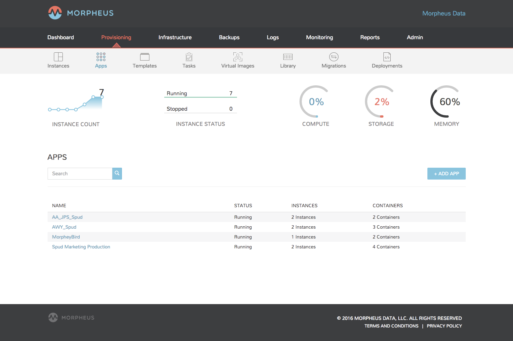
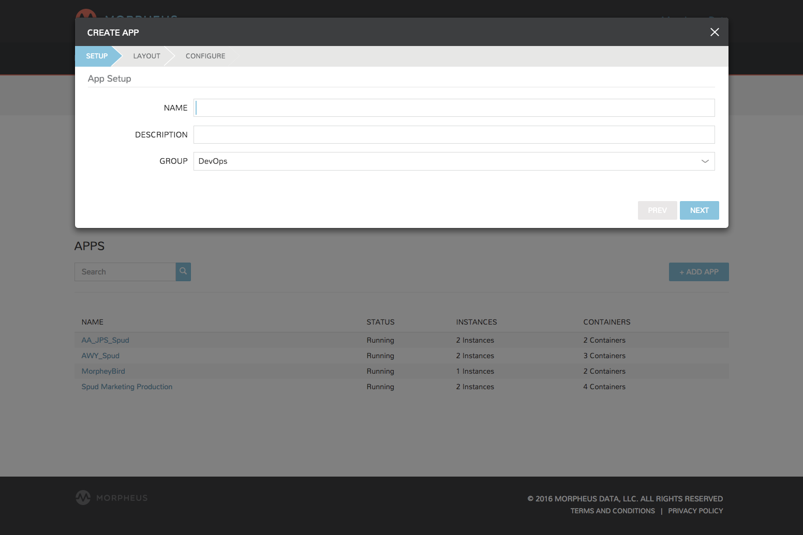
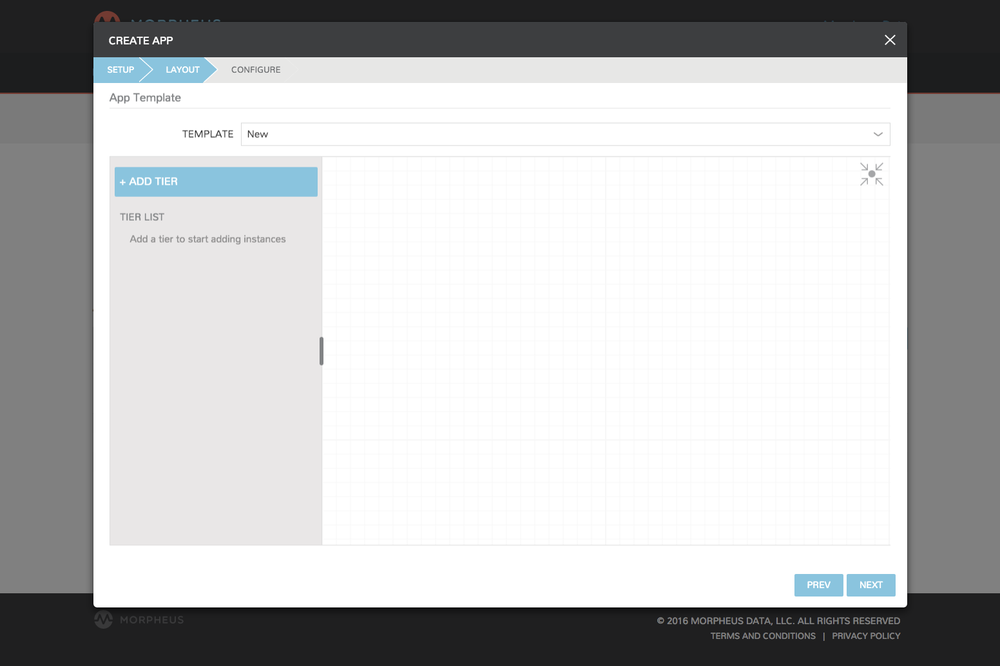
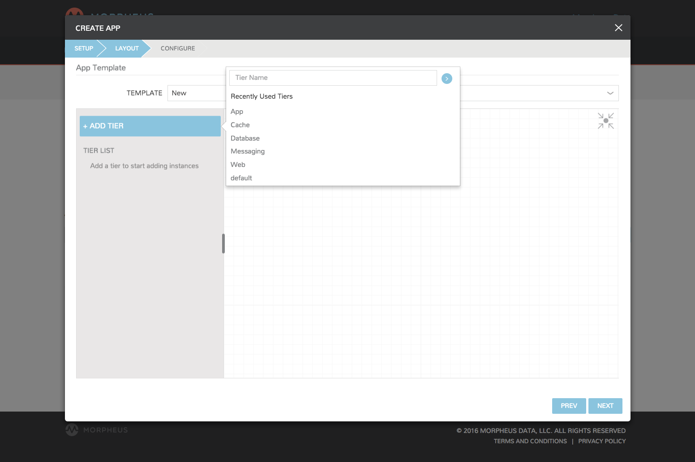
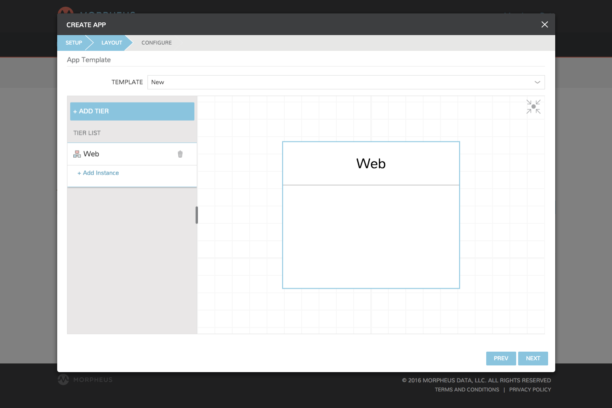
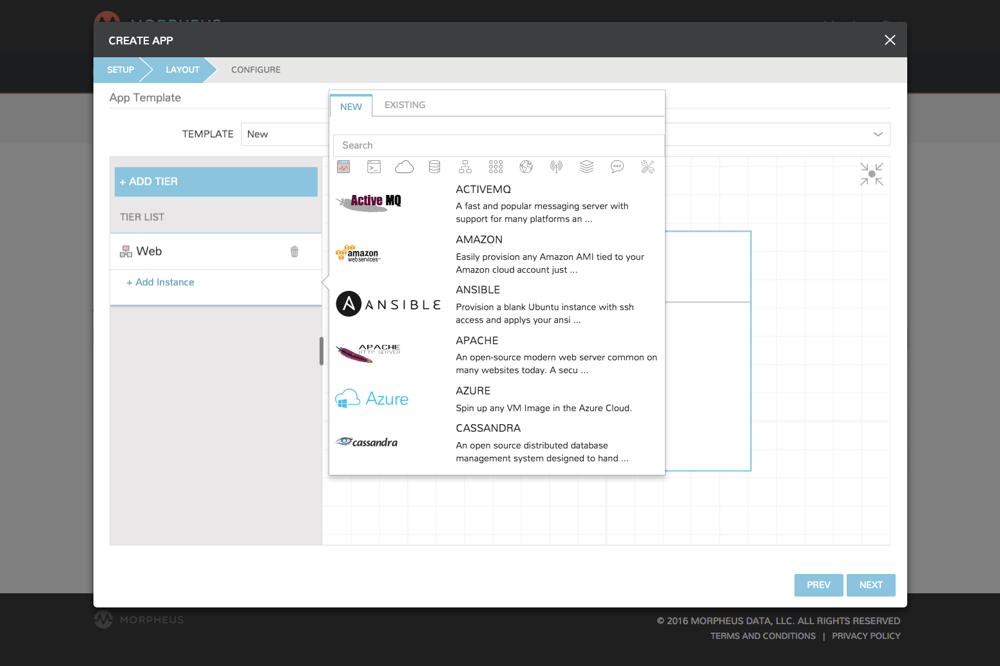
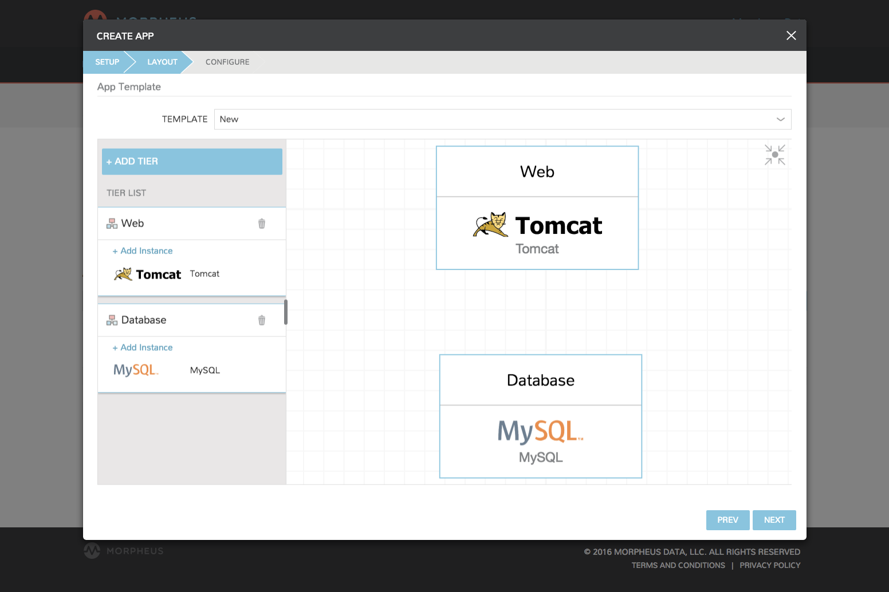
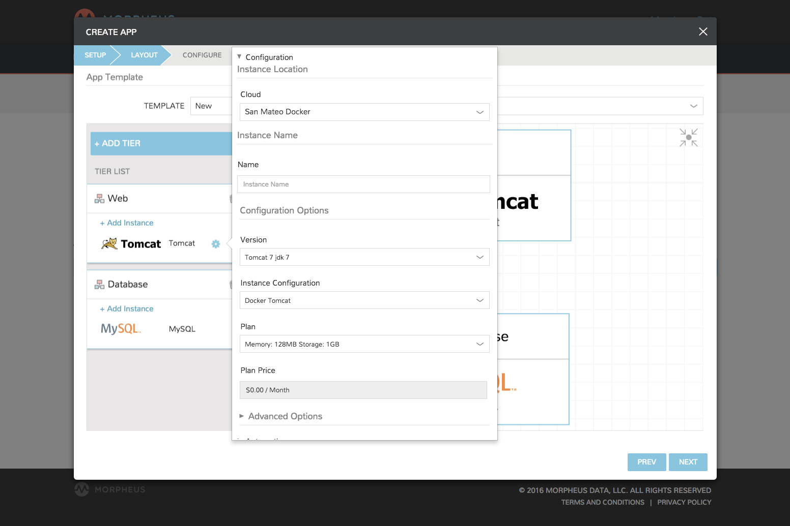
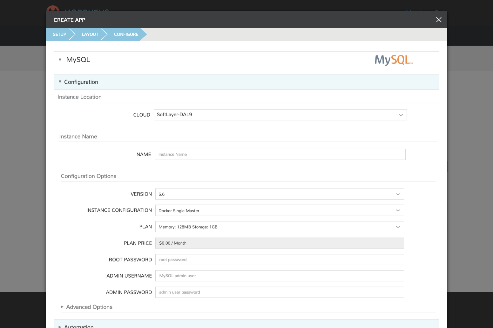
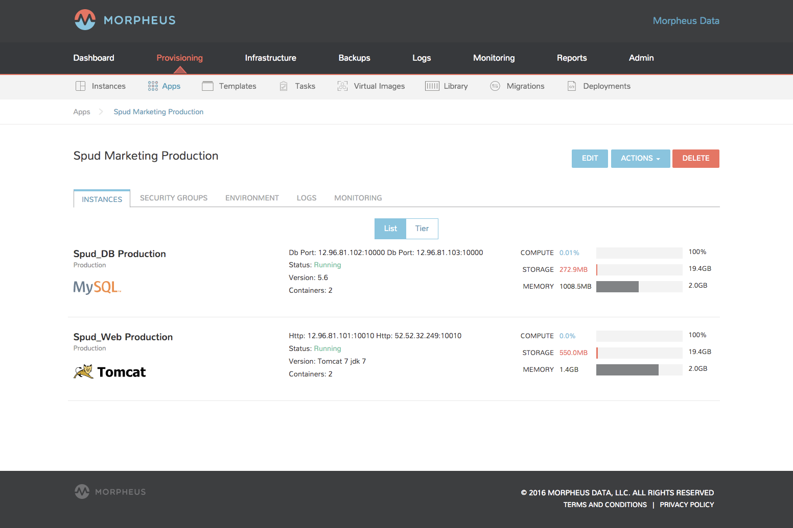

Provisioning¶
There are several capabilities in the |morpheus| provisioning engine. Things ranging from application / service deployments via containers, virtual machines, and even bare metal. Deployment management and app template construction are also core aspects of the provisioning engine. Take advantage of custom tasks and workflows within any environment by building tasks and workflows from those tasks. There is a lot of information to cover with regards to provisioning but |morpheus| makes it intuitive and smooth.
Provisioning Concepts¶
|morpheus| is a powerful infrastructure agnostic Cloud Application Management Platform. As a result of this there are some differing concepts compared to other CMP platforms in the space. It is here that it is important to notice the qualification difference between |morpheus| and other platforms.
|morpheus| refers to itself as a CAMP (Cloud Application Management Platform) as opposed to a (Cloud Management Platform). While that may seem minor, it actually is a big deal. Many CMP based applications start at the IaaS layer and work up to the application layer (often needing additional PaaS) architectures to fill out the model. |morpheus| was designed from a middle-ground perspective. As such some concepts are a bit different. This provides a more complete platform that allows for greater capabilities out of the box as will be seen when these concepts are covered.
Instances¶
|morpheus| starts with provisioning Instances. In some platforms an Instance is representative of a singular object like a “Virtual Machine” in Amazon. In |morpheus| , this concept was rethought. An Instance is more of a representation of a Resource or Service. This service may involve several virtual machines or even several docker containers.
For example, in the morpheus Instance wizard Mongo is an option and contains several “Instance Configurations”. One of these configurations is a full Mongo cluster consisting of either seven virtual machines or seven docker containers. Rather than representing these directly as seven individual “instances”, |morpheus| groups them together into a singular instance of a service that contains multiple containers or virtual machines. This even allows for instance actions that can be performed to expand capacity on an instance (either horizontally or vertically). In the past, a database server may have been representative of a singular server, but this model has drastically changed in a big data world. This same concept also can apply to something like a simple Apache web server where there are 10 copies of a webserver horizontally scaled out to handle traffic.
When viewing an instance detail page, one is able to look at details/statistics specific to a virtual machine or container. |morpheus| simply helps simplify the management model for tracking these services.
Containers / Nodes / Virtual Machines¶
In relation to Instances, an instance can have many nodes. A node is
a generic representation of a container or a virtual machine. In most
cases, |morpheus| will represent a node as a Container or Virtual
Machine depending on the provisioning engine used for the instance. Node
is just a generic naming representation when referring to these types of
items. The public developer API, however, often refers to both virtual
machines and docker containers as Containers. The UI was since
updated to better deliniate this concept for easier understanding but In
essence the name is valid for both concepts of containerized
environments as well as Virtual Machines. In fact, one can even think of
a Docker Host as a Hypervisor (which we do).
Hosts / Servers¶
This concept is mostly tailored to users of morpheus responsible for managing and maintaining the underlying infrastructure integrations. A Host typically refers to a Docker Host in which a container in an instance is running, or a hypervisor virtual machines can be provisioned onto. A Server is the underlying general representation of a physical or virtual server. It could be a Host representation , a Virtual Machine, or even a Bare Metal delineation.
When a user provisions a vm based instance, a corresponding server record is created to represent the link to the actual resource via the underlying provisioning engine. This may seem a bit odd but provides an aspect of |morpheus| that is quite powerful. This singular concept is what allows |morpheus| to injest “Brownfield” environments. We do not need to start clean. |morpheus| can be integrated into existing environments and manage existing virtual machines. The way |morpheus| does this is by periodically syncing existing vms from the added cloud integrations. A server record will be created and periodically updated (5 minutes typically) with realtime information and changes. This, in essence, provides CMDB based capabilities as well. When a server is discovered, the user (given the appropriate access) can convert the virtual machine to a managed instance. When this is done a corresponding Instance is made in the provisioning section of |morpheus| and the |morpheus| Agent can also optionally be installed to provide more refined guest operating system level statistics and logging.
Apps¶
On top of all the previous concept, |morpheus| provides an Apps layer. An App is a collection of Instances linked together via application tiers. Tiers allow the user to define segregated sections of connectivity between the various elements / instances within an application. Once these instances are all linked together in an application concept, this may affect Instance environments and provide service discovery capabilities for them to cross connect. There are several service discovery aspects within morpheus as well as integrations with services like Consul.
Templates¶
A template is typically referred to as an Application Template. It allows a user to define an application structure for easy reproducibility and deployment into various environments. They can be used to mix and match various instance types to provision an application dependent on multiple layers of services.
Instances¶
Instances is a great starting point for taking advantage of self service features and spinning up both vms and containers. In |morpheus| it may be advisable to cover the definition of a few terms used within the application so as to reduce confusion.
- Instance - A set of containers or virtual machines that can correlate to a single horizontally scalable entity or a service suite like a database. (It is important to note that an instance can contain one or more containers/vms depending on the instance type and configuration).
- Container - Typically a docker container provisioned via a |morpheus| Docker host.
- Virtual Machine - A virtualized compute server provisioned onto various hypervisor hosts.
The top of the main Instances page shows overall statistic for the listed Instances, including count, status, and resource utilization.
Please note the instances listed are determined by group access and role permissions. Also, certain features shown may be hidden or disabled depending on user permissions.
You can search for instances by name, or filter by group, instance type, or category.
The instance list contains important information about each instance, including the instance name, environment tag, instance type icon, ip and port info, instance version, the number of virtual machines or containers in the instance, the group the instance is in, and the cloud or clouds the instance is in.
Instance Details¶
The instance detail page is where you can view and fully manage an instance. To get to an instance detail page, navigate to provisioning, instances, and click on an instance. Please note instance details and actions differ between instance types and user permissions.
There are several sections within an Instance page that provide useful capabilities to the user.
- Summary - Stats and status information
- Deploy - Track deployment history for instance types that support deployments or manually kick off a deployment (only visible for instance types that support deployments)
- Settings - Some instance types support custom configuration settings (i.e. mysql presents the my.ini)
- Network - Useful for configuring security groups and access to the instance.
- Monitoring - Quick summary of the monitoring system and all checks that were configured to test teh state of the instance
- Backups - Quick backup dashboard. Useful for viewing historical backups as well as kicking off new ones.
- Logs - View all aggregated logs from the containers or vms representing the instance.
- Environment - View the environment variables presented to the instances or exported by the instances via Apps (more on this in the Apps section). Even see Imported environment variables that may be referenced by the running instance.
- Scale - For instances that support load balancing and auto scaling. Easily configure auto scaling thresholds and load balancer settings that pertain to a particular instance.
- Console - Access the instance or container via a clientless Console supporting SSH, RDP, VNC, and even hypervisor level remote consoles.
Instance Actions¶
Instance actions allow you to perform numerous management tasks on instances. The actions available depend on the instance type, hypervisor, roles permissions, and instance state.
- Edit
- Edit the Name, Description, Environment, or Group for the Instance.
- Delete
- Deletes the Instance.
Important
Deleting an Instance will delete associated VM’s or Containers and cannot be undone. To delete instances without deleting associated VM’s, delete the VM from the Infrastructure section and uncheck “Remove Infrastructure” while checking “Remove Associated Instances” in the delete modal options.
Actions¶
Available options in the Actions dropdown can include:
- Suspend
- Puts the VM in a suspended state without shutting down the OS.
- Stop/Start/Restart Service
- Stops, Starts or Restarts the service associated with the Instance Type.
- Stop/Start/Restart Server
- Stops, Starts or Restarts the Virtual Machine.
- Lock/Unlock Instance
- A locked instance cannot be deleted until it is unlocked.
- Import As Image
- Creates a Virtual Image template from the Instance at its current state and adds it to the Virtual Image library with corresponding metadata.
- Reconfigure
- The Reconfigure action allows service plan, disk, cpu, ram, networks and storage controller changes. Available options depend on the instance type and service plan configuration. Some resize actions require an instance restart.
- Clone
- Creates a new Instance from the Instance at its current state.
- Backup
- Immediately executes a backup of the Instance. Only available for Instances with backups enabled.
- Run Workflow
- Presents workflow options and then immediately runs selected Workflow on the Instance. Workflows can be created in the
Provisioning -> Automationsection. - Run Script
- Presents Script options and immediately executes selected Script on the Instance. Scripts can be created in the
Provisioning -> Librarysection. - Apply Template
- Presents Template options and immediately applies selected Template to the Instance. Templates can be created in the
Provisioning -> Librarysection. - Add Node
- Adds an additional node to the configuration. Additional options and configurations are required in the add node wizard depending on instance configuration and type.
- Eject Disk
- Ejects attached disk/iso.
- Add Slave
- Adds a database slave in the Instance.
- Change Master
- Changes the database Master node in an Instance.
Tip
Scrolling down in the Actions dropdown may be necessary to see all options.
Performing Instance Actions¶
- Select the Provisioning link in the navigation bar.
- Click the Instance from the list of instances you wish to perform an action on.
- Click the Actions drop down button and select an Action.
Notes¶
Every Instance has a Notes section for adding useful information about
the Instance. Notes can be added by selecting the ADD NOTES button
on the bottom of Instance Detail pages. Existing notes can be edited by
selecting the EDIT NOTES
Tip
Markdown Syntax is supported in Instance Notes.
Apps¶
Apps allow instances having general relationships to be grouped in a clean and organized manner. App functionality enables full control of which instances belong in an app as well setting Firewall and Access Control List (ACL) rules. Use Apps to structure all necessary components into a single place. Add checks and groups for web servers, database nodes, etc.
Creating Apps¶
To create and App, click “+ADD APP” on the right side of the main Apps section in Provisioning.
Next fill in the Setup tab with your App name, optional description, and select a resource group:
In the LAYOUT tab, you have the option of selecting a Template (created in the Templates section) or Add Tiers. To use a Template, select a Template from the dropdown and your app will populate in the layout section. You can add to, modify, edit your template, or simply click next of the Template is fully configured:
To create an app without a Template, start by adding a Tier by clicking “+ ADD TIER”. Name the Tier by selecting a pre-populated, recently used, or add a new/custom Tier name:
For each Tier added, a new Tier container is created, and the Tier is added to the Tier list:
Next click +Add Instance to add a new instance, or select from existing instances using the Existing tab. Multiple instances can be added to a single container as well:
After adding all instances, click out of the Add Instance pop up to return to the layout page. Continue to add all Tiers and instances for your App:
To configure new or existing instances, hover over the instance name in the Tier List and click the Settings gear icon. (Instances can also be fully configured/edited in the Configure tab by clicking next in the bottom right):
To link Tiers, hover over a Tier, click the blue circle at the top of a Tier and drag the arrow over the top of the Tier you would like to link:
To remove a Tier or Instance, click the trash icon. Once your App is built, click Next in the bottom right.
In the Configure tab, you can fully configure your instances if they are not configured yet, or edit the configurations. If the app was built with Existing instances, no configuration options are presented:
Once your App is ready, click Complete in the bottom right and your App will be created, appear in the App section, and if new instances were used, the instances will be provisioned:
Templates¶
Virtual Images¶
Provisioning -> Virtual Images
Overview¶
The Virtual Image section displays a list of all images, local and synced, that are available to deploy. |morpheus| includes a rich catalog of pre-configured System Images available for every cloud type. User Images are automatically synced from Cloud Integrations and added to the Virtual Images section. Images can also be uploaded directly into |morpheus| via local file or url. Amazon and Azure Marketplace images can also be added to the Virtual Images Section.
Image Types¶
|morpheus| provides a vast System Image repo with pre-configured images for every Cloud. All other images are User Images. User images can be added directly to |morpheus| , or automatically synced from integrated clouds. It is important to configure synced User Images for metadata, including specifying the Platform and User Credentials, prior to provisioning. Provisioning a User Image that has not been configured may result in failed provisioning.
Important
Synced User Images need to be configured prior to provisioning.
Configuring Virtual Images¶
System Images¶
System Images are pre-configured with metadata and have Cloud-Init or Cloudbase-Init installed. These images are ready to be provisioned with no configuration necessary. It is highly recommended to populated the Administration -> Provisioning -> Cloud-Init section with user data prior to provisioning, as the user and password/key will be added to all Instances provisioned from System Images. Users can also be added during provisioning in the Add User provisioning wizard section.
Note
Editing System Images is disabled.
User Images¶
Typically |morpheus| does not have sufficient metatdata to successfully provision synced User Images. After integrating clouds and User Images have synced, it is highly recommended to configure the images prior to provisioning.
To edit and configure an existing Virtual Image:
- Select Actions - Edit in the Virtual Images list, or Edit on a Virtual Image detail page.
- Configure the following on the Image:
- Name
- Name of the Virtual Image in |morpheus| . This can be changed from the name of the Image, but editing will not change the name of the actual Image.
- Operating System
- Specifies the Platform and OS of the image. All Windows images will need to have Operating System specified on the Virtual Image, as |morpheus| will assign Linux as the Platform for all Images without Operating System specified.
- Cloud Init Enabled?
- On by default, uncheck for any Image that does not have Cloud-Init or Cloudbase-Init installed.
- Install Agent
- On by default, uncheck to skip Agent install. Note this will result in the loss of utilization statistics, logs, script execution, and monitoring. (Some utilization stats are collected for agent-less hosts and vm’s from VMware and AWS clouds).
- Username
- Existing Username on the Image. This is required for authentication, unless |morpheus| is able to add user data via Cloud-Init, Cloudbase-Init, or guest processes (VMware).
- Password
- Password for the Existing User on the image.
- Cloud-Init User Data
- Accepts what would go in runcmd and can assume bash syntax.
- Permissions
- Set Tenant permissions in a multi-tenant |morpheus| environment. No impact on single-tenant environments.
- Auto Join Domain?
- Enable to have instances provisioned with this image auto-join configured domains (Windows only).
- VirtIO Drivers Loaded?
- Enable if VirtIO Drivers are installed on the image for provisioning to KVM based Hypervisors.
- Force Guest Customization?
- VMware only, forces sys-prep on image during provisioning.
- Trial Version
- Enable to automatically re-arm the expiration on Windows Trial Images during provisioning.
- Save Changes
Note
Cloud-Init is enabled by default on all Images. Images without Cloud-Init or Cloudbase-Init installed must have the cloud-init flag disabled on the Virtual Image setting or Provisioning may fail.
Provisioning Images¶
When provisioning a System Image for the first time, |morpheus| will download and stream the image from S3 to the source Cloud if the image is not local to the Cloud. The Image will also be cached on the |morpheus| Appliance under /var/opt/morpheus/vm/vmcache. Subsequent provisions of the image will use the created template in the Cloud or the cached local Image if the images does not exist in the selected Cloud, in which case the cached Image will be copied to the Cloud.
When using Images that already exist in the destination cloud, such as synced, marketplace, or previously copied images, no image transfer between the |morpheus| Appliance and destination cloud will take place.
Note
The |morpheus| Appliance must be able to download from Amazon S3 when provisioning System Images for the first time.
Note
The |morpheus| Appliance must be able reach and resolve the destination Host when provisioning System Images or uploaded Images for the first time. This included being able to resolve ESXi host names in VMware VCenter clouds, and reach the destination ESXi host over port 443.
Add Virtual Images¶
Virtual Images can be upload to |morpheus| from local files or URL’s. Amazon and Azure Marketplace metadata can also be added to the Virtual Images library, enabling the creation of custom catalog Instance Type from Marketplace images (no image is transferred to |morpheus| when adding Marketplace images).
To Add Virtual Image:
- Select + Add Virtual Image in the Virtual Images page.
- Select Image format:
- Amazon AMI
- Azure Marketplace
- Digital Ocean
- ISO
- PXE Boot
- QCOW2
- RAW
- VHD
- VirtualBox
- VirtualBox (vdi)
- VMware (vmdk/ovf/ova)
- Configure the following on the Virtual Image:
- Name
- Name of the Virtual Image in |morpheus| . This can be changed from the name of the Image, but editing will not change the name of the actual Image.
- Operating System
- Specifies the Platform and OS of the image. All Windows images will need to have Operating System specified on the Virtual Image, as {norpheus} will assign Linux as the Platform for all Images without Operating System specified.
- Cloud Init Enabled?
- On by default, uncheck for any Image that does not have Cloud-Init or Cloudbase-Init installed.
- Install Agent
- On by default, uncheck to skip Agent install. Note this will result in the loss of utilization statistics, logs, script execution, and monitoring. (Some utilization stats are collected for agent-less hosts and vm’s from VMware and AWS clouds).
- Username
- Existing Username on the Image. This is required for authentication, unless |morpheus| is able to add user data via Cloud-Init, Cloudbase-Init, or guest processes (VMware).
- Password
- Password for the Existing User on the image.
- Storage Provider
- Location where the Virtual Image will be stored. Default Virtual Image Storage location is /var/opt/morpheus/morpheus-ui/vms. Additional Storage Providers can be configured in Infrastructure -> Storage.
- Cloud-Init User Data
- Accepts what would go in runcmd and can assume bash syntax.
- Permissions
- Set Tenant permissions in a multi-tenant |morpheus| environment. No impact on single-tenant environments.
- Auto Join Domain?
- Enable to have instances provisioned with this image auto-join configured domains (Windows only).
- VirtIO Drivers Loaded?
- Enable if VirtIO Drivers are installed on the image for provisioning to KVM based Hypervisors.
- Force Guest Customization?
- VMware only, forces sys-prep on image during provisioning.
- Trial Version
- Enable to automatically re-arm the expiration on Windows Trial Images during provisioning.
Note
Default Storage location is /var/opt/morpheus/morpheus-ui/vms. Additional Storage Providers can be configured in Infrastructure -> Storage. Ensure local folders are owned by morpheus-app.morpheus-app if used.
- Upload Image
Images can be uploaded by File or URL:
- File
- Drag and Drop the image file, or select “Add File” to select the image file.
- Url
- Select the URL radio button, and enter URL of the Image.
Note
|morpheus| provides a file upload progress. The Virtual Image configuration can be saved while the upload is in progress, and the upload will finish in the background.
Library¶
Overview¶
The Library section is used to add virtual images as custom instances to the provisioning catalog. The Library Section is composed of:
- Instance Types
- Layouts
- Node Types
- Option Types
- Option Lists
- Templates
- Scripts
Uploaded or synced images from the virtual images section are added to nodes, a node or multiple nodes are added to layouts, and layouts are added to Instance Types. Scripts and Templates can be attached to nodes, with phased execution options for scripts.
Instance Types¶
Types___Library___|morpheus| _salt_library_item.png
Adding an Instance Type creates a new Library Item category. Multiple layouts can be added to an instance type, and these layout can have different nodes attached. The instance wizard will present the layout options compatible with the selected cloud. If cloud selection is turned off, all layouts will be presented for all cloud types accessible by the user.
Name:: Name of the Instance Type in the Provisioning Library Code:: Useful shortcode for provisioning naming schemes and export reference. Description:: The description of the Instance Type shown in the Provisioning Library. 255 characters max Category:: For filtering in Instance sections and Provisioning Wizard * Web * SQL * NoSLQ * Apps * Network * Messaging * Cache * OS * Cloud * Utility Icon:: Suggested Dimensions: 150 x 51 Visibility:: * Private- Only accessibly by assigned Accounts/Tenants * Public- accessible by all Accounts/Tenants Environment Prefix:: Used for exportable environment variables when tying instance types together environment Variables in app contexts. If not specified a name will be generated Enable Scaling (Horizontal):: Enables load balancer assignment and auto-scaling features Supports Deployments:: Enables deployment features (Requires a data volume be configured on each version. Files will be copied into this location)
Upon saving, this Instance Type will be available in the Provisioning Catalog, per user role access. However we still need to add layouts to the Instance Type, and prior to creating a layout, we will add a node type.
Node Types¶
salt_node_type.png
The following fields are for all node technology types:
- Name
- Short Name
- Version
- Category
- Technology
** Azure ** Docker ** Google ** Hyper-V ** KVM ** Nutanix ** OpenStack ** VMware ** Xen * Environment Variables
The Options fields will change depending on the Technology option selected.
For VM provisioning technology options, select an image from the VM Image dropdown, which is populated from the Virtual Images Section and will include images uploaded into |morpheus| , and synced images from added clouds.
Note
Azure Marketplace images and Amazon AMI’s can now be added in the Virtual Images section for use as node types in custom library items.
For Docker, type in the name and version of the Docker Image and select the integrated registry.
- Expose Ports
- To open port on the node, select “Add Port” and enter the name and port to expose. The Load Balancer http, https or tcp setting is only required when attaching to load balancers.
Example port configuration:
node_ports.png
Scripts & Templates¶
To attach scripts and templates that have been added to the Library to a node type, start typing the name and then select the script(s) and/or template(s).
** Multiple scripts and templates can be added to a node type ** Scripts and Templates can be added/shared among multiple node types ** The Execution Phase can be set for scripts in the Scripts section. ** Search will populate Scripts or Templates containing the characters entered anywhere in their name, not just the first letter(s) of the name.
Upon save the Node Type will be created, and available for adding to layouts.
Layouts¶
salt_new_layout.png
Layouts are added to Instance types, and will be presented under the Configuration Options dropdown in the Provisioning Wizard for that Instance type.
Instance Type:: Select the Instance Type to add the new Layout to. Custom Instance Types must already be created and one layout cannot be added to multiple instance types, or change Instance Types after creation.
Note
Layouts cannot be added to |morpheus| provided library items at this time.
Name:: The name the layout will present as in the Configuration Options dropdown in the provisioning wizard Version:: The version number or name for the Layout. Layouts in an Instance Type with the same version will all show under the Configuration Options dropdown when that version in selected while provisioning. Description:: Description of the layout Technology:: Technology determines which cloud this layout will be available for. Environment Variables:: Nodes:: Single or multiple nodes can be added to a Layout by searching for and selecting the node(s). An example of a layout with multiple nodes is the Hyper-V MySQL Master/Slave layout pictured below (note this is the Layout detail screen after the layout has been created.) Multi-node Layout example:
hyper-v_master_slave.png
Upon save, the layout will be attached to the selected Instance Type, and available when provisioning that Instance Type for the appropriate cloud technology.
salt_instance_type_layout_detail.png
Option Types¶
Option Types allow you to create additional fields within the provisioning wizard.
OptionType.png
These field entries can then be used in scripts and templates using our variable naming convention (more here).
variable.png
Option List¶
Much like Option Types, Option Lists allow you to give the user more choices during provisioning to then be passed to scripts and/or automation. Option Lists, however, are pre-defined insofar as they are not free-form. They can either be manually entered CSV or JSON or they can be dynamically compiled from REST calls via GET or POST requests.
optionlist.png
OptionListREST.png
Your new Library Item is now ready for provisioning. Multiple Layouts with multiple technologies can be added to a single Instance Type. For example, the Layouts for the |morpheus| Apache Instance Type, with multiple layouts for many different cloud technologies and nodes is pictured below:
Migrations¶
Migration Types¶
Hypervisor to Hypervisor¶
- Store
- |morpheus| will create a snapshot of existing VM and upload the snapshot to virtual image directory. Images that have been uploaded to the Virtual Images library can be converted to VHD, QCOW2, RAW and VMDK formats and then re-provisioned.
- New
- |morpheus| will create a snapshot of an existing VM, convert from source format to required destination format, and then provision the VM into the target environment.
- Source
- VMWare, Openstack, Xen, ESXi, Nutanix* Azure* Hyper-V* ( *in-development)
- Destination
- Softlayer, Openstack, Metapod, Xen, Amazon, VMWare, ESXi, Nutanix, Hyper-V Supported OS Type: Windows or Linux
- Service Impact
- Disruptive Migration
Virtual Image Extract¶
The Virtual Image extract capabilities allow for a virtual image to be extracted and stored in the virtual image repository or the image can be migrated into a cloud.
- Source
- Any Cloud
- Destination
- SoftLayer (Only)
- Supported OS Type
- Windows
- Service Impact
- Non Disruptive
- Requirements
- Requires a separate disk or network share to store the image during conversion process. Capacity of the disk or network share should be sized appropriately to support the data that will be exported.
Live Stream¶
Live Stream is a linux only streaming process that will take a snapshot of a volume and allow it to be streamed to a destination linux system that is either existing or new. The destination linux must already exist and it can either be a managed or unmanaged VM in |morpheus| . The destination will be overwritten from a root level perspective.
- Source
- Any Cloud
- Destination
- |morpheus|
- Supported OS Type
- Linux (Only)
- Service Impact
- Non Disruptive
- Requirements
- Requires the Linux host/guest to be configured for LVM and that free space of the capacity to be streamed is available. A destination linux host/guest must be available to receive the stream.
Add Migration¶
- Select the Provisioning link in the navigation bar.
- Select the Migrations link in the sub-navigations bar.
- Click the Add Migration button.
- From the Create Migration Wizard select the type of migration, then click the Next button.
Depending on the Migration Type selected input the following, then click the Next button.
- Hypervisor to Hypervisor * Select Cloud, and Server * Input Host, Remote Port, Username, and Password
- Virtual Image Extract * Select Platform, Existing or New, Cloud, and Server. * Input Host, WinRM Port, WinRM User, WinRM Password, and Snapshot path.
- Live Stream * Select Platform, Existing or New, Cloud, and Server * Input Host, SSH Port, SSH User, SSH Password, Public Key, and Logical Volume Device. * Enter Destination details, then click the Next button.
- Finalize your configuration if needed, then click the complete button.
Manually Start Migration¶
If you chose to not run your migration in the Create Migration Wizard then you will be able to manually start the migration.
- Select the Provisioning link in the navigation bar.
- Select the Migrations link in the sub-navigations bar.
- Click the actions dropdown of the row of the migration you wish start, and select Run.
Remove Migration¶
- Select the Provisioning link in the navigation bar.
- Select the Migrations link in the sub-navigations bar.
- Click the actions dropdown of the row of the migration you wish remove, and select Remove.
Deployments¶
The deployments section provides very useful PaaS like capabilities when it comes to deploying applications into the newly provisioned environment. These can be uploaded directly from the UI, pulled from a build server, pulled from a public or private Git repository or even via the API and the various plugins created, such as Jenkins, and Gradle to support continuous build / integration workflows.
A deployment can be considered a set of versions that relate to a particular project or application being deployed. This allows one to keep track of a history of versions and easily reuse these deployment versions across instances that may exist in different environments. An example might be to deploy a version from a deployment to a staging instance and (once approved) also deployed into production.
Getting Started¶
Getting started with deployments is easy. They can vary slightly for the application stack being deployed but the simplest phase of a deployment is adding a version and adding the appropriate files to the deployment archive that are needed for the application to run. This could be a single file like a WAR file for Tomcat, or it could be hundreds of files for stacks like Ruby on Rails.
There are a few ways to create a deployment. The first is to use the Provisioning -> Deployments section of the application to create them. Simply add a new deployment and give it a name representing the application that is being deployed. Once a deployment is created select the deployment to view its versions (which will be empty to start). Next, its time to add a version.
When adding a version there are several options. There are 3 types represented by the UI. These include File, Fetch, and Git respectively. A File deployment allows the user to simply drag their files into the file explorer presented by the dialog. This file explorer can take single files or entire file trees (If files exist in subfolders then only the Chrome browser is supported due to browser limitations at the time of this writing). This is also the common type that is represented when files are uploaded via the CLI, or available build tool integration plugins. Once the files have completed their upload simply save the version for use.
Git¶
For performing git based deploys |morpheus| supports both public and private repositories. To utilize a private git repository the add version dialog will display a public keypair that can be added to the git service for authentication purposes. Currently this keypair is shared across the account and not specifically scoped to the user so it may be advisable to connect this integration to a deployment account in git. From here either a ssh or https git url can be entered along with a git branch or tag name. Once the version is saved, this repository will be copied down into the deployment archive for use.
Fetch¶
Fetch based deployments are pretty straightforward. Simply enter a url to a file representing the deployment. This can be a single file (in which case it will just be added to the deployment archive singularly) or it can be a zip file (which will automatically be expanded into the archive). HTTP Authentication options can also be entered if the url requires some form of basic authentication scheme for access by the appliance.
Deploying to an Instance¶
Now that a version has been added to a deployment it is easy to push that deploy out to any instance provisioned within |morpheus| . Simply navigate to the specific Instance that needs deployed to. On the Instance detail page there is a tab called Deploy. From here simply add a deploy. The dialog will ask firstly from which deployment the deploy is from (or allow you to create a new one on the spot) , and secondly which version to deploy (also with the option to add one on the fly). The next step of the wizard will display any configuration options that might be specific to the instance type being deployed to (i.e. CATALINA_OPTS for Tomcat or Java Command for java) as well as the file explorer and deployment type selections for review (or use when creating a new version on the fly). Fill in the required items then simply hit complete. The deploy will now be asynchronously sent off to all of the virtual machines or containers within the instance in a rolling restart and the deployment status will be represented.
Tip
When deploying to an instance, the custom configuration options that were entered during the previous deployment are automatically carried forward allowing one to edit them or leave them as is.
Rolling Backwards and Forwards¶
Because of the tracked history of deployments kept within |morpheus| , the deploy tab of instance detail makes it easy to choose a previously run deployment and jump back to it in the event of a failed deployment. The history will automatically be updated and the configuration, as well as data from the previous deployment state of the instance will be restored.
Offloading Storage¶
Since a full history of the backup buils are kept in |morpheus| , as the appliance grows it becomes necessary to change where these are stored. On a fresh install these are stored on the local appliance in /var/opt/morpheus or wherever the master account may have changed the configuration to point to. It is also possible to adjust the deployment archive store by creating a Storage Provider tied to an S3 compatible object store, Openstack Swift object store, or any other type of mountpoint provided. This option can be adjusted in Admin->Provisioning once a storage provider is created within the account.
Add Deployment¶
Add Deployment¶
- Select the Provisioning link in the navigation bar.
- Select the Deployments link in the sub-navigation bar.
- Click the Add Deployment button.
- Enter a Name for the deployment and a description (optional)
- Click the Save Changes button to save.
Add Version¶
- Select the Provisioning link in the navigation bar.
- Select the Deployments link in the sub-navigation bar.
- Click the Name of the deployment you would like to add a version to.
- Click the Add Version button.
- From the Add Version Wizard select the deployment type.
- Input the Version of the deployment.
- Depending on the type of deployment selected perform one of the following:
- Files
- Drag files into the file explorer presented by the dialog. This file explorer can take single files or entire file trees.
- Fetch
- Enter a url to a file representing the deployment.
- Git
- The add version dialog will display a public key pair that can be added to the git service for authentication purposes. Either a ssh or https git url can be entered along with a git branch or tag name.
Click the Save Changes button to save.
Edit Deployment¶
To Edit Deployment:
- Select the Provisioning link in the navigation bar.
- Select the Deployments link in the sub-navigation bar.
- Click the Edit Deployment icon on the row of the deployment you wish to edit.
- Modify information as needed
- Click the Save Changes button to save.
Delete Deployment¶
To Detete Deployment:
- Select the Provisioning link in the navigation bar.
- Select the Deployments link in the sub-navigation bar.
- Click the Delete Deployment icon on the row of the deployment you wish to delete.